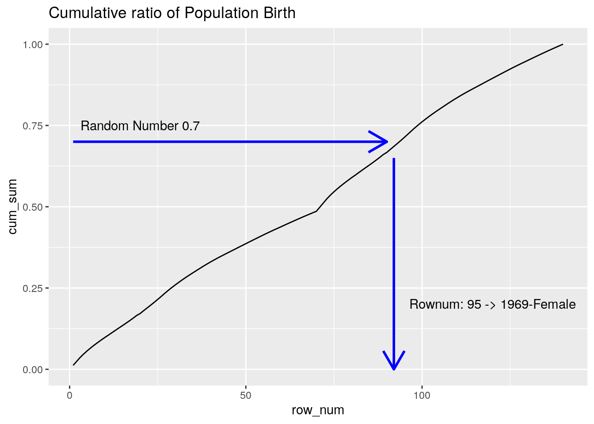
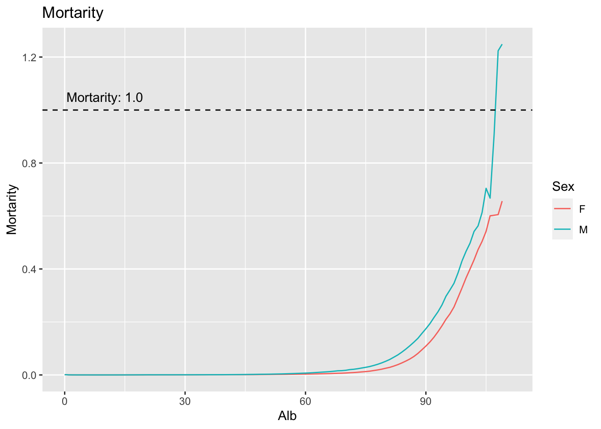

Chapter 2 死亡率の推定
1章です。
2.1 日本版死亡データベースの取得・集計
健保組合データを擬似生成するために、出生・志望の公的統計を利用する。
乱数でシミュレーションするために必要な情報を集計して求める。
2.1.1 出生率データの取得
IPSSが公開している、年次出生数のデータを利用する。
library(readr)
library(dplyr)
url = 'http://www.ipss.go.jp/p-toukei/JMD/00/STATS/Births.txt'
dat = read.table(url, skip=2, header = TRUE)
dat %>% head## Year Female Male Total
## 1 1947 1301806 1376986 2678792
## 2 1948 1303060 1378564 2681624
## 3 1949 1316630 1380008 2696638
## 4 1950 1134396 1203111 2337507
## 5 1951 1043048 1094641 2137689
## 6 1952 977101 1028061 2005162ある年に、FemaleとMaleが何人生まれたかのデータになっている。
乱数を利用して、誕生年と性別をサンプリングしたい。性別列を作って縦に持っておく。
library(tidyr)
library(magrittr)
dat %>%
pivot_longer(cols = c("Male", "Female"), names_to = "Sex", values_to = "Life") %>%
mutate(Sex = if_else(Sex == "Female", "F", "M")) -> dat
dat## # A tibble: 146 × 4
## Year Total Sex Life
## <int> <int> <chr> <int>
## 1 1947 2678792 M 1376986
## 2 1947 2678792 F 1301806
## 3 1948 2681624 M 1378564
## 4 1948 2681624 F 1303060
## 5 1949 2696638 M 1380008
## 6 1949 2696638 F 1316630
## 7 1950 2337507 M 1203111
## 8 1950 2337507 F 1134396
## 9 1951 2137689 M 1094641
## 10 1951 2137689 F 1043048
## # … with 136 more rows乱数でシミュレーションをするために、累積比率を出しておく
dat %<>%
arrange(Sex, Year)
dat %<>%
mutate(ratio = Life / sum(Life)) %>%
mutate(cum_sum = cumsum(ratio))
dat %>%
select(-Total) %>%
write.csv("./data/ipss_birth.csv", row.names=FALSE, quote = FALSE)
## 内容確認
dat %>%
select(-Total) %>%
head(100)## # A tibble: 100 × 5
## Year Sex Life ratio cum_sum
## <int> <chr> <int> <dbl> <dbl>
## 1 1947 F 1301806 0.0118 0.0118
## 2 1948 F 1303060 0.0119 0.0237
## 3 1949 F 1316630 0.0120 0.0357
## 4 1950 F 1134396 0.0103 0.0460
## 5 1951 F 1043048 0.00949 0.0555
## 6 1952 F 977101 0.00889 0.0644
## 7 1953 F 910516 0.00829 0.0727
## 8 1954 F 858368 0.00781 0.0805
## 9 1955 F 841022 0.00765 0.0882
## 10 1956 F 809194 0.00736 0.0955
## # … with 90 more rows累積確率分布を作る。これにより、一様乱数(y軸:0-1)から、対応する行番号が得られて、 行番号から、(出生年,性別)を得ることができる。
欲しい人数分だけ一様乱数を取れば、出生のデータが得られる。
library(ggplot2)
dat = read_csv("./data/ipss_birth.csv")## Rows: 146 Columns: 5## ─ Column specification ──────────────────────
## Delimiter: ","
## chr (1): Sex
## dbl (4): Year, Life, ratio, cum_sum##
## ℹ Use `spec()` to retrieve the full column specification for this data.
## ℹ Specify the column types or set `show_col_types = FALSE` to quiet this message.dat %>%
mutate(x_axis = paste(Year, Sex, sep="")) %>%
mutate(row_num = 1:nrow(.)) %>%
ggplot() +
geom_line(aes(x = row_num, y = cum_sum), stat = "identity") +
annotate("segment",x=1,xend=96,y=0.7,yend=0.7,colour="blue",
size=1, arrow=arrow()) +
annotate("segment",x=98,xend=98,y=0.7,yend=0.0,colour="blue",
size=1,arrow=arrow()) +
annotate("text", x=20, y=0.75, parse=TRUE, label="'Random Number 0.7'") +
annotate("text", x=125, y=0.2, parse=TRUE, label="'Rownum: 98 -> 1971-Male'") +
ggtitle("Cumulative ratio of Population Birth")
これを利用して、出生のシミュレーションができる。
2.1.2 死亡データの取得と整形
次は、死亡率を算出して、死亡のシミュレーションを行う。
url_death_rate = "http://www.ipss.go.jp/p-toukei/JMD/00/STATS/Mx_1x1.txt"
dat = read.table(url_death_rate, skip=2, header = TRUE)
dat %>% str## 'data.frame': 8103 obs. of 5 variables:
## $ Year : int 1947 1947 1947 1947 1947 1947 1947 1947 1947 1947 ...
## $ Age : chr "0" "1" "2" "3" ...
## $ Female: chr "0.087401" "0.033723" "0.016994" "0.011412" ...
## $ Male : chr "0.099181" "0.034697" "0.016804" "0.011461" ...
## $ Total : chr "0.093432" "0.034220" "0.016897" "0.011437" ...死亡率のデータは、Year年にX才だった人が1年後に死んでいる確率を表している。(本当に？)
今回は簡単のために、2016年の死亡率でシミュレーションを行う。
dat %<>%
filter(Year == 2016) %>%
select(-Year) %>%
select(-Total)Ageがcharになっているので、確認する。
dat$Age %>% table## .
## 0 1 10 100 101 102 103 104 105 106 107 108 109
## 1 1 1 1 1 1 1 1 1 1 1 1 1
## 11 110+ 12 13 14 15 16 17 18 19 2 20 21
## 1 1 1 1 1 1 1 1 1 1 1 1 1
## 22 23 24 25 26 27 28 29 3 30 31 32 33
## 1 1 1 1 1 1 1 1 1 1 1 1 1
## 34 35 36 37 38 39 4 40 41 42 43 44 45
## 1 1 1 1 1 1 1 1 1 1 1 1 1
## 46 47 48 49 5 50 51 52 53 54 55 56 57
## 1 1 1 1 1 1 1 1 1 1 1 1 1
## 58 59 6 60 61 62 63 64 65 66 67 68 69
## 1 1 1 1 1 1 1 1 1 1 1 1 1
## 7 70 71 72 73 74 75 76 77 78 79 8 80
## 1 1 1 1 1 1 1 1 1 1 1 1 1
## 81 82 83 84 85 86 87 88 89 9 90 91 92
## 1 1 1 1 1 1 1 1 1 1 1 1 1
## 93 94 95 96 97 98 99
## 1 1 1 1 1 1 1110+があるので、これは簡単のために111才にしておく。
dat %<>%
mutate(Age = if_else(Age == "110+", "111", Age)) %>%
mutate(Age = as.integer(Age))
dat %<>%
mutate(Anb = Age) %>%
select(-Age)
dat %>% head## Female Male Anb
## 1 0.002028 0.001995 0
## 2 0.000313 0.000340 1
## 3 0.000174 0.000178 2
## 4 0.000098 0.000133 3
## 5 0.000087 0.000095 4
## 6 0.000084 0.000101 5AnbとAlbについては、あとで追記する。Anbなので、Albに直す。
\(x\)才のAnb死亡率\(q_x\)とすると、Alb死亡率は、\(\frac{q_x+q_{x+1}}{2}\)になる。
dat %<>%
mutate(Female = as.numeric(Female)) %>%
mutate(Male = as.numeric(Male)) %>%
mutate(lead_Female = lead(Female)) %>%
mutate(lead_Male = lead(Male)) %>%
mutate(F = (Female + lead_Female)/2) %>%
mutate(M = (Male + lead_Male)/2) %>%
mutate(Alb = Anb) %>%
select(Alb,F,M)
dat %>% head## Alb F M
## 1 0 0.0011705 0.0011675
## 2 1 0.0002435 0.0002590
## 3 2 0.0001360 0.0001555
## 4 3 0.0000925 0.0001140
## 5 4 0.0000855 0.0000980
## 6 5 0.0000815 0.0001060年次死亡率を可視化してみる。 横軸が年齢、縦軸が1年以内に死亡する確率。
dat %>%
pivot_longer(cols=c("F","M"), names_to = "Sex", values_to = "Mortarity") %>%
ggplot(aes(x = Alb, y = Mortarity, group = Sex, color = Sex)) +
geom_line() +
geom_hline(yintercept = 1.0, linetype = "dashed") +
annotate("text", x = 10, y = 1.05, label = 'Mortarity: 1.0') +
ggtitle("Mortarity")## Warning: Removed 2 row(s) containing missing values (geom_path).
高齢部分が不自然だが、そういうものらしい。100才以上は使わない、として切り捨てる。
また、年次死亡率を月次死亡率に変換する。
年次死亡率を\(y\)、月次死亡率を\(x\)とすると、
\(y = 1 - (1-x)^{12}\)なので、\(x\)について解くと、\(x = 1 - (1-y)^{0.08...}\)になる。これにより、月次死亡率が得られる。
dat %<>%
filter(Alb < 100)
dat %<>%
mutate(F = 1 - (1-F)**(1/12)) %>%
mutate(M = 1 - (1-M)**(1/12))
dat %>% write.csv("./data/ipss_mortality.csv", quote=F, row.names = F)
dat %>%
mutate(F = round(F, 7)) %>%
mutate(M = round(M, 7)) %>%
head## Alb F M
## 1 0 9.76e-05 9.73e-05
## 2 1 2.03e-05 2.16e-05
## 3 2 1.13e-05 1.30e-05
## 4 3 7.70e-06 9.50e-06
## 5 4 7.10e-06 8.20e-06
## 6 5 6.80e-06 8.80e-06おわり
2.1.3 ここまでやったこと
- 公的統計の取得
- 出生率データの作成
- 死亡率データの作成
2.1.4 つぎにやること
擬似レセプトデータを作るために… - 出生のシミュレーション - 死亡のシミュレーシ